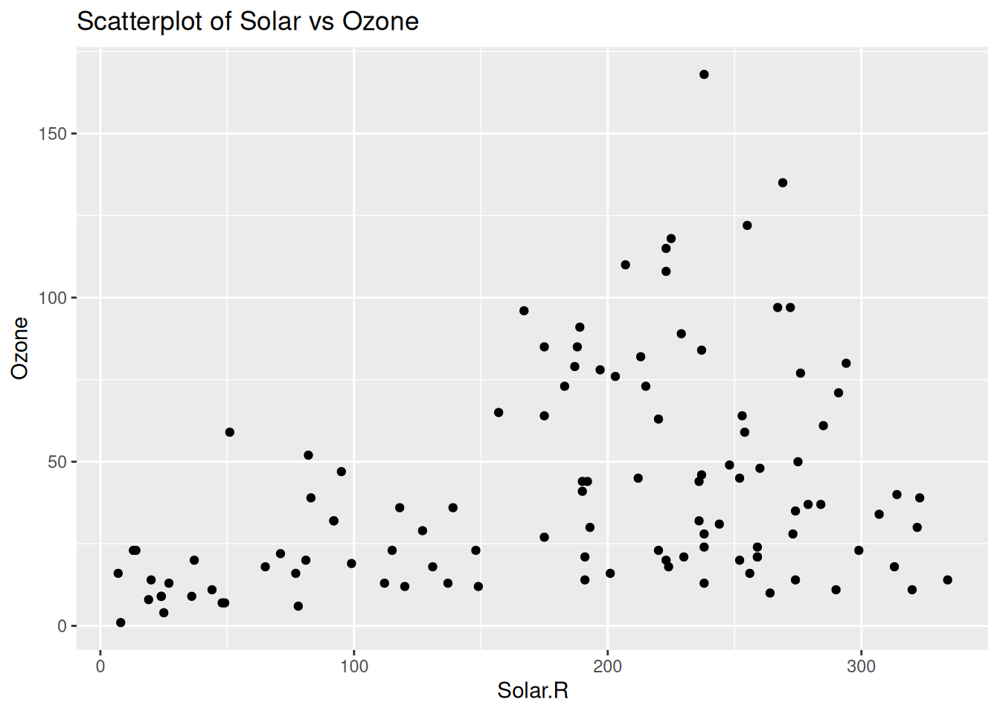
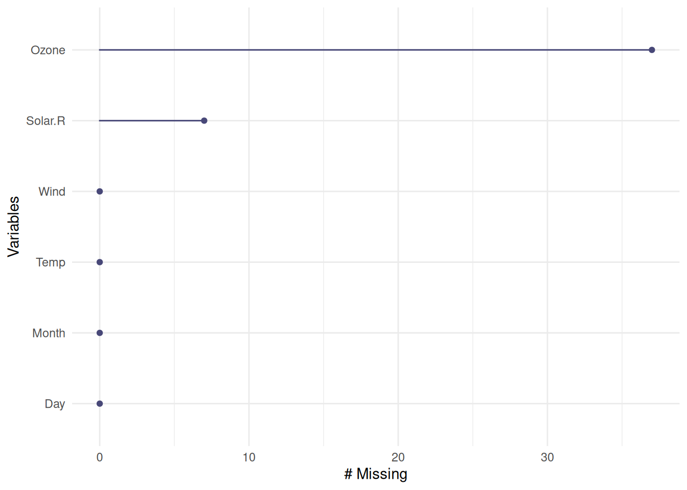
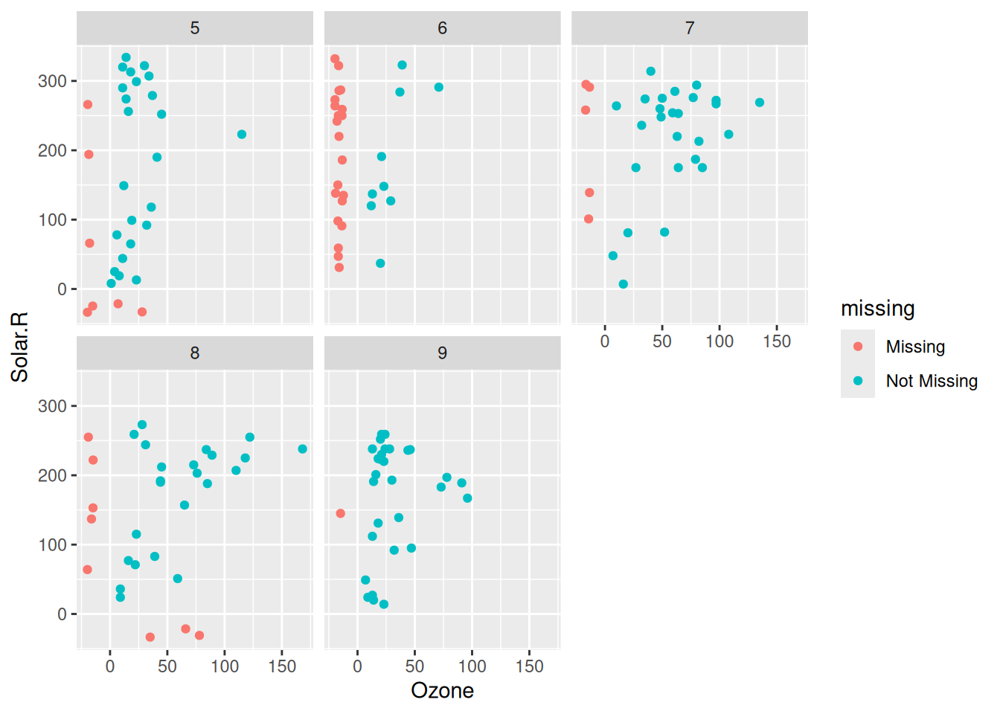
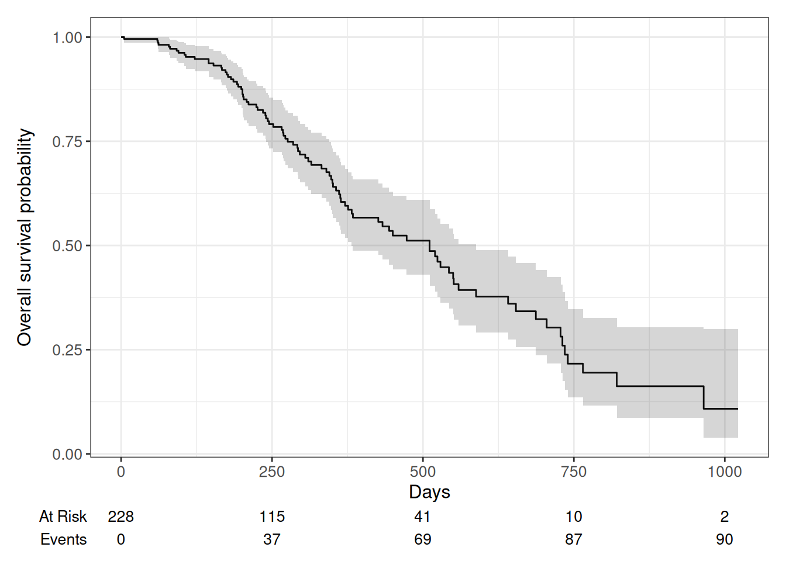

# install.packages(naniar)
# install.packages(ggplot2)
library(naniar)
library(ggplot2)
data <- airqualityUser Guide: Dark Data
1 Introduction
Dark data is defined by Craiu, Gong, and Meng (2023) as “any kind of data that are lost or distorted before analysis”. The most common forms of dark data that data scientists and statisticians come across include missing data, as well as censored data, both of which will be the main discussion points in this guide. By the end of this user guide, you should be able to identify these two types of dark data, and also have an increased set of skills to be able to handle them.
2 Pre-Requisites:
In order to be able to replicate and follow along with the steps and functions that will be discussed in this user guide, it is assumed that the user has RStudio downloaded, as well as the latest version of R installed. Also, it will be assumed that you have a basic understanding of common commands in R, such as installing packages and basic data handling techniques, as well as data visualization (ggplot2). To follow along with this user guide, you will need to install the naniar and survival packages. When working with your own data set, it is expected that your data includes missing values (typically N/A values), or the time of an event of interest is partially unknown (commonly seen in healthcare with survival analysis). In this user guide, I will be using one data set that is built into each package discussed (“airquality” data set for the naniar package, and the “lung” data set for the survival package).
3 Steps(with code and graphics examples):
3.1 Naniar package (missing data)
The naniar package is designed specifically to help visualize missing data. More specifically, it assists in helping deal with NA values that show up in certain data sets. These missing values often show up in certain circumstances such as questionnaires, where the respondent chooses not to answer, as well as things such as technological issues and participation dropouts. In these steps, the main goal is to show you how to make simple visual plots that make it easy to identify and locate missing values in a data set. Vis_dat (n.d.) has written an article that explains many different ways that the naniar package can be utilized in the data science world. The data set that will be used in this example (the airquality data set) records 153 days of air quality and other meteorological measurements such as the ozone, solar radiation, wind, and temperature from the summer months in New York City, 1973.
- Install and load necessary packages and read in your data (I’ll be using the “airquality” data set in the naniar package for this demonstration, but the same aspects and techniques should work for any data set with missing values).
- Create a scatter plot using geom_point in the ggplot package displaying the relationship between the Solar.R variable (assign to x-axis) and the Ozone variable (y-axis).
ggplot(data, aes(x=Solar.R, y=Ozone)) +
geom_point() +
ggtitle("Scatterplot of Solar vs Ozone")Warning: Removed 42 rows containing missing values or values outside the scale range
(`geom_point()`).
This graph will exclude NA values and instead will tell you that 42 rows have been removed because they contain missing values. This doesn’t give you anything to work with regarding further analysis of these missing values.
- Use gg_miss_var to visualize the missing data.
gg_miss_var(airquality)
This function counts the missing variables that are found in each variable of the data set and gives you a simple chart to visualize where these missing values are located. This visualization can come in handy for experimental designing and determining which aspects of the experiment gather the most missing values and adjustments can be made accordingly.
- Create a data frame using miss_var_summary
miss_var_summary(airquality)# A tibble: 6 × 3
variable n_miss pct_miss
<chr> <int> <num>
1 Ozone 37 24.2
2 Solar.R 7 4.58
3 Wind 0 0
4 Temp 0 0
5 Month 0 0
6 Day 0 0 This table also displays the amount of missing values in each variable, except now we’ve added a new column that tells us the percentage of all the values in each variable that are missing. When thinking about handling missing data, it is important to consider the context of why this data is important. A table will make it easier to display information to other people, but a graph may be more helpful to help locate where these missing values are at.
- Use geom_miss_point and ggplot to make a scatter plot and use a facet function to make a separate plot for each month.
ggplot(airquality, aes(x = Ozone, y = Solar.R)) +
geom_miss_point() +
facet_wrap(~Month)
The geom_miss_var function will plot the missing values 10% less than the minimum value in that variable instead of just reporting the point as NA.
3.1.1 Application
Even though a specific data set was used in this example, it is easy to transfer this into any data set that you are working on. It’s important to know what significance these missing values hold in the context of the data, so you know which function is the most appropriate to use and which one will most efficiently get you the answers you need. If you just want to know where these missing values are located in the data, functions like miss_var_summary and gg_miss_var will likely give you what you’re looking for. If you are more so looking to find out what would happen if those missing values were there, use geom_miss_point to get a good estimate on where that data likely would’ve fit in with the rest of the data.
3.2 Survival package
The survival package is designed to help statisticians deal with censored data. Censored data occurs when data is incomplete or partially known. This will most commonly happen when dealing with topics such as machine failure and death. The three main components of censored data includes left censoring (the event occurred before the study period), right censoring (the event occurred after the study period), and interval censoring (event occurred between two certain points, but that point is unknown). The data set in the survival package will be used in this guide. The lung data set in the survival package examines 228 advanced lung cancer patients and their survival times. In the data set, variables such as age, status (censored or dead), survival time, and sex are included. From this data, we will examine censored data, and in this case, censored data means that the patient died before the study was concluded.
- Install and load the necessary packages.
# install.packages(survival)
# install.packages(dplyr)
# install.packages("ggsurvfit")
library(survival)
library(dplyr)
Attaching package: 'dplyr'The following objects are masked from 'package:stats':
filter, lagThe following objects are masked from 'package:base':
intersect, setdiff, setequal, unionlibrary(ggsurvfit)
data2 <- lung- Use the “Surv” function to look at survival times of the first 10 patients.
Surv(lung$time, lung$status)[1:10] [1] 306 455 1010+ 210 883 1022+ 310 361 218 166 In this table, a plus sign next to a value will indicate that the value is right censored (patient died after the study period).
- Knowing which values are censored in a data set can help with further analysis. Now, we are going to look at the amount of time in days until an event (in this case, a patient dying) by creating a Kaplan-Meier plot. The purpose of this plot is to show us the survival probability of patients as time goes on based on sex. To do this, we will use the “survfit2” function to create a survival curve and assign our two variables to the graph. Also, we will use “add_confidence_interval” and “add_risk_table” to give us a better understanding of how the data can fluctuate and how many values we are seeing at each time stamp.
survfit2(Surv(time, sex) ~ 1, data = lung) |>
ggsurvfit() +
labs(x = "Days", y = "Overall survival probability") +
add_confidence_interval() +
add_risktable()
3.2.1 Application
While censored data isn’t as common in a statisticians day-to-day life, it is still important to know how to handle it. Even though the information may not be complete, excluding this information would lead to highly inaccurate results and underestimating survival times. In terms of what to do with this information, just like the missing values, you should determine what purpose these values will hold. Simply knowing that a patient survived a certain amount of days is better than ignoring the data point entirely. In addition, one of the best ways to visualize censored data is to use Kaplan-Meier plots. These plots will give you a good estimate as to how long a patient survived, even if it happens after the study ends.
4 Conclusion
After reading this user guide, you should hopefully have a better idea on how to identify these two types of dark data, as well as knowing different ways of handling and analyzing them. To many, these data points may seem irrelevant or unimportant, but those people don’t see how these values can play a crucial role in the overall results of a data set, as well as the impact they could have on future experiments and studies. The naniar package will come in handy for a variety of applications, as missing values are found a lot more frequently then censored data. However, that does not mean that knowing how to handle censored data will not be useful, as in this case where we are in the healthcare field, it will also play a crucial role in other areas of our lives. If we can increase our awareness and knowledge of the many types of dark data, it will make our jobs as data scientists much easier and it will likely give us better and more accurate results for our studies.
5 Additional Resources
For more information on how to use the naniar package to visualize missing values, check out Vis_dat (n.d.) by Nicholas Tierney.
https://cran.r-project.org/web/packages/naniar/vignettes/getting-started-w-naniar.html
For more information on the survival package and censored data, check out “Survival Analysis in r Emily c. Zabor” (n.d.) by Emily C. Zabor.
For more information on the different types of dark data, including ones that were not discussed in this guide, check out Craiu, Gong, and Meng (2023) by Radu V. Craiu.
https://www.annualreviews.org/content/journals/10.1146/annurev-statistics-040220-015348